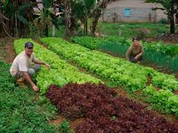
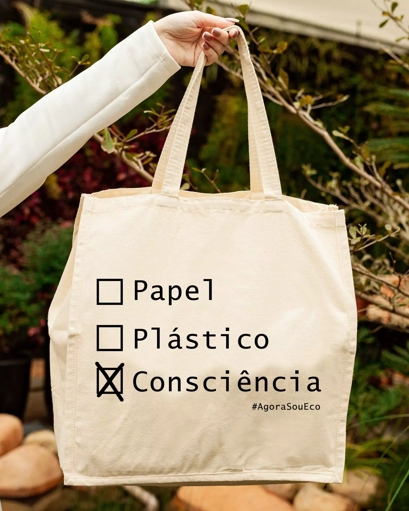

Mundo Orgânico – Vida Saudável, Sustentável e Natural 🌿
Bem-vindo ao Mundo Orgânico, o seu espaço para um estilo de vida mais saudável e sustentável! Aqui, acreditamos que pequenas escolhas fazem grande diferença para o nosso bem-estar e para o planeta.
🌱 Alimentos Orgânicos
Os alimentos orgânicos são cultivados sem o uso de agrotóxicos, fertilizantes químicos ou organismos geneticamente modificados. Além de serem mais nutritivos e saborosos, eles respeitam o meio ambiente e garantem um sistema produtivo mais equilibrado.
No Mundo Orgânico, selecionamos cuidadosamente nossos fornecedores para oferecer produtos frescos e saudáveis. Nosso compromisso é garantir que você tenha acesso a alimentos livres de substâncias prejudiciais, promovendo mais bem-estar para você e sua família.
🌍 Sustentabilidade em Primeiro Lugar
Aqui no Mundo Orgânico, acreditamos que sustentabilidade não é apenas um conceito, mas um compromisso diário. Nossa missão é reduzir o impacto ambiental, promover práticas de consumo consciente e incentivar hábitos que preservem os recursos naturais para as futuras gerações.
Trabalhamos com fornecedores que seguem rigorosos padrões ambientais e sociais, garantindo que nossos produtos sejam cultivados de forma ética e responsável. Além disso, buscamos constantemente novas maneiras de minimizar desperdícios e adotar soluções sustentáveis em toda a nossa cadeia produtiva.
🏡 Dicas para um Estilo de Vida Natural
Adotar um estilo de vida natural significa fazer escolhas mais saudáveis e sustentáveis no dia a dia. Isso envolve desde a alimentação até o cuidado com o meio ambiente e a conexão com hábitos que promovam bem-estar físico e mental. No Mundo Orgânico, acreditamos que pequenas mudanças podem trazer grandes benefícios para a sua saúde e para o planeta.
Seja você um iniciante ou alguém que já busca uma rotina mais equilibrada, nossas dicas vão te ajudar a tornar esse processo mais simples e prazeroso, acesse nosso blog para aprender 5 inicitivas sustentaveis.
✨ Nossas Iniciativas
- ✅ Parceria com pequenos produtores – Valorizamos a agricultura familiar e incentivamos a produção orgânica local.
- ✅ Embalagens ecológicas – Utilizamos materiais biodegradáveis e recicláveis para reduzir o impacto
- ✅ Educação ambiental – Promovemos workshops e conteúdos educativos sobre sustentabilidade e
- ✅ Doação de alimentos – Colaboramos com instituições sociais para distribuir alimentos saudáveis a comunidades em vulnerabilidade.
- ✅ Incentivo ao cultivo caseiro Oferecemos kits de hortas urbanas para quem deseja plantar seus próprios alimentos em casa.
🤝 Algumas de nossas parceirias
.jpg)

.jpg)

💚 Junte-se a nós nessa jornada por um mundo mais orgânico e sustentável!
📩 Assine nossa newsletter e receba novidades, promoções e conteúdos exclusivos diretamente no seu e-mail!